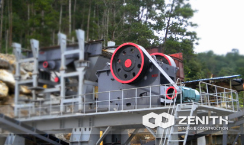

- 


Stone Crushing Plant Design
Stone crushing plant design according to field survey or the client's actual requirements and elaborate design, fully embodies the rationality and effectiveness of design, applicability, handling capacity of large, low wear and low operating cost significant characteristics.
According to different process requirements, various types of crushing equipment to meet customer requirements of different processes.
Stone Crushing Plant Application
Stone crushing plant applicable to the application of hydropower, building material, highway, urban construction and other industries, for the hard limestone, granite, basalt, gravel, slag, etc. various kinds of materials of aggregate and making artificial sand homework, production and processing of highway surface material, high grade highway pavement macadam, high-speed railway passenger line sand and gravel aggregate, hydropower station sand stone, port and airport runway broken stone and other special construction field.
Prominent advantage
- Simple and easy to operate
Advanced electronic control operating system, high degree of automation, the whole production line process is simple, easy to operate, in addition to the switch machine and routine maintenance, no manual operation.
- Good product quality
To solve the traditional equipment for processing the finished sand stone grain unqualified fatal problem, good quality of the finished stones, uniform particle size, good grain, powder, output rate is low, in full compliance with the national highway material requirements.
- High economic efficiency
It overcomes the disadvantages of high cost, high production efficiency, low operation cost and high economic efficiency when the traditional equipment is hard to process hard materials and the cost is too high.
Stone Crushing Plant Working principle
Stone crushing plant mainly by the vibrating feeder, jaw crusher, counterattack type crusher, vibrating screen, belt conveyor, centralized electronic equipment composition, in order to meet the needs of different customers processing can be equipped with cone type crusher, dust removal equipment.
Large stone by silo by vibrating feeder evenly sent to jaw crusher for crushing and coarse crushed stone by belt conveyor sent to the crusher for further broken, after fine crushing stone by belt conveyor sent to vibrating screen screening, sieve ceding several different specifications of stones, to meet the size requirements of the stones from the finished belt conveyor sent to the finished material pile; does not meet the size requirements of the stones by belt conveyor return material sent to counterattack crusher are broken again, forming closed-circuit circulation many times.